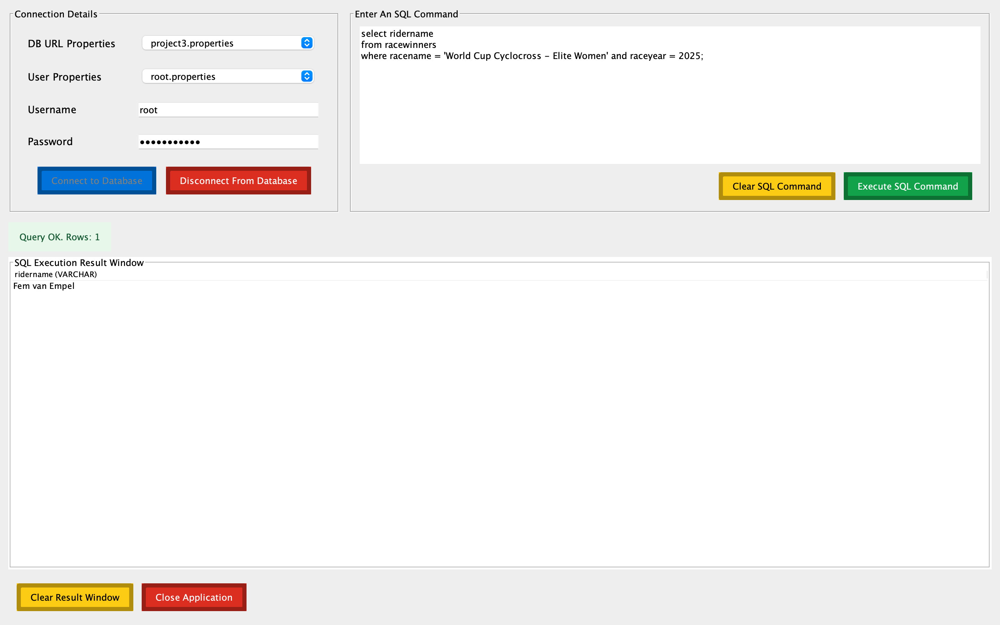

Project Description
This project is a two-tier Java application with a GUI front-end that connects to a MySQL server using JDBC. Users authenticate through the interface and can execute SQL commands depending on their access level. The application separates query operations from update operations and tracks successful actions by recording them in an operations log database, supporting basic auditing and monitoring of user activity.
Skills Learned / Used
- Connecting Java applications to MySQL using JDBC
- Executing SQL queries vs SQL updates safely and correctly
- Role-based permissions (restricting functionality by user access)
- Using properties/config files for database connection settings
- Logging and monitoring successful database operations